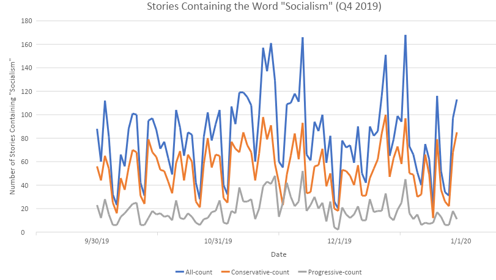

Analysis
Use of Socialism by Right and Left Media

Insights
- For the last quarter of 2019, i.e. October to December 2019, the use of 'socialism' in left and right media is fairly substantial. Its use varies significantly, with spike in certain periods, such as mid November and mid December.
- Its use by the right media mirrors the overall trend, i.e. it is largely the frequency and timing of its use in the right media that determines the overall trend.
- Its use in the left media is both significantly less than the right, and has some differentials in pattern from the right and overall media.
How did we get here?
Utilizing the datasets stored within Media Cloud, we searched the term 'Socialism' to see how often the word is used in conservative versus progressive news outlets. For the sample, we did this for the last quarter of 2019.
Within Media Cloud, we filtered for 'Left', 'Center Left', 'Center', 'Center Right', and 'Right' per the already established Media Cloud definitions. 'Progressive' is therefore filtered as 'Left' and 'Center Left' and Conservative is filtered as 'Right' and 'Center Right.'
Using this search methodology, we obtained datasets in .csv format.